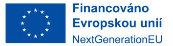
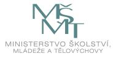

Open Knowledge for a Sustainable Future: Research, Ethics, and Wikipedia
Overview
Tuesdays from 16:45, Room 3.51, tř. Svobody 26, 779 00 Olomouc
This course is an introduction to writing viewed as creating and sharing knowledge — through both Wikipedia and academic writing. We will teach you how to do so effectively, with the goal of creating a more sustainable future. Our focus is on content rather than style.
This course has been developed in cooperation with Wikimedia Czech Republic. It is taught in a combination of English and Czech.
We will cooperate with the Asian Month on Czech Wikipedia, which runs through November.
Learning Objectives
By the end of this course, students will be able to:
- Evaluate and ethically assess knowledge sources, distinguishing between reliable and unreliable information, and critically engaging with multilingual content.
- Write clearly and effectively for diverse purposes and audiences, including academic contexts and general readerships.
- Understand and apply Wikipedia's standards and practices, contributing ethically, accurately, and collaboratively to public knowledge.
- Clearly and responsibly present multilingual information, acknowledging linguistic and cultural differences and demonstrating sensitivity and accuracy.
- Communicate persuasively and ethically, developing well-supported arguments that advance sustainability, social responsibility, and care for people and the planet.
Francis's sessions are 90 minutes, 16:45–18:15. Pavel's are three hours, 16:45–19:45, with the new material in the first 90 minutes and practice afterwards, so you can do the second half at home if you have to leave. See the table for dates and times.
We will focus on environmental issues in the writing practice, developing the ESCO skill: report on environmental issues.
Course Table of Contents
| Week | Date | Time | Topic | Due | Other |
|---|---|---|---|---|---|
| 1 | 22 Sep | 16:45-18:15 | Overview (Pavel and Francis) | ||
| 2 | 29 Sep | 16:45-19:45 | Introduction to Wikipedia - Rules and Recommendations | Pavel (3h, Czech) | |
| 3 | 6 Oct | 16:45-18:15 | Academic vs Encyclopedic Writing: what is your message? | Topic + 3 references | Francis (English) |
| 4 | 13 Oct | 16:45-18:15 | Finding, judging and citing sources | Three paragraphs (Sun 11 Oct) | Francis (English) |
| 20 Oct | — | Reading and writing week | No class: work on your topic and sources | ||
| 5 | 27 Oct | 16:45-18:15 | FAIR: making data findable and reusable | Annotated bibliography | Francis (English) |
| 6 | 3 Nov | 16:45-19:45 | Writing a Good Wikipedia Article - Clear, Engaging and Neutral | Pavel (3h, Czech) | |
| 7 | 10 Nov | 16:45-18:15 | CARE, ethics, and honest persuasion | Francis (English) | |
| 17 Nov | — | Public holiday: Den boje za svobodu a demokracii | No class: Struggle for Freedom and Democracy Day | ||
| 8 | 24 Nov | 16:45-19:45 | Feedback on Wikipedia Articles - Editing as Communal Knowledge Building | Pavel (3h, Czech) | |
| 9 | 1 Dec | 16:45-18:15 | Peer review: how it works | Francis (English) | |
| 10 | 8 Dec | 16:45-18:15 | Peer review: doing it | Draft, in the forum | Francis (English) |
| 11 | 15 Dec | 16:45-18:15 | Conclusion: long term strategies for sustainable knowledge creation; reflection | Peer reviews | Pavel and Francis |
| 22 Dec | — | Reading and writing weeks | No class until the deadline: revise your paper and your article | ||
| 15 Jan | Paper and article | Moodle / Wikipedia | |||
Readings and Resources
Academic writing and integrity
Allosso, D., & Allosso, S. F. (2019). A short handbook for writing essays in the humanities and social sciences. Minnesota Libraries Publishing Project. https://mlpp.pressbooks.pub/writinghandbook/
Wilkinson, M. D., Dumontier, M., Aalbersberg, I. J., Appleton, G., Axton, M., Baak, A., … Mons, B. (2016). The FAIR Guiding Principles for scientific data management and stewardship. Scientific Data, 3, 160018. https://doi.org/10.1038/sdata.2016.18
Carroll, S. R., Garba, I., Figueroa-Rodríguez, O. L., Holbrook, J., Lovett, R., Materechera, S., … Hudson, M. (2020). The CARE Principles for Indigenous Data Governance. Data Science Journal, 19(1), 43. https://doi.org/10.5334/dsj-2020-043
Wikipedia and collaborative knowledge
Wikimedia Foundation. (n.d.). Wikipedia: Five pillars. Retrieved September 22, 2026, from https://en.wikipedia.org/wiki/Wikipedia:Five_pillars
Matei, S. A., & Dobrescu, C. (2011). Wikipedia's “neutral point of view”: Settling conflict through ambiguity. The Information Society, 27(1), 40–51. https://doi.org/10.1080/01972243.2011.534368
Veselý, V. (Ed.). (2020). Jak psát Wikipedii: Příručka pro začátečníky [How to write Wikipedia: A beginner's guide]. Wikimedia Česká republika. Available on Wikimedia Commons
Blahuš, M. (2023). Jak se zrodila česká Wikipedie [How the Czech Wikipedia was born]. Available on Wikimedia Commons
Wikimedia Česká republika. (n.d.). Jak psát Wikipedii [How to write Wikipedia]. navody.wikimedia.cz
Assessment
You will write two things: a Wikipedia article and a short academic paper, both due on 15 January. In addition to the final paper, you will submit drafts, and comment on each other's work. The assessment page has the all details: what to write, how it is marked, the citation style, and the rules about using AI.
Acknowledgements
- Logo:
 The Wikimedia Logo is a registered trademark of Wikimedia.
The Wikimedia Logo is a registered trademark of Wikimedia.
- The development of this course was supported by funding for Support of green skills and sustainability at UPOL by the EU, the Czech National Program of Reconstruction and the Czech Ministry of Education, Youth and Sports (2025).
{kind=link}


The source for this course is available here https://github.com/bond-lab/Open-Knowledge under a Creative Commons Attribution 4.0 International Licence — CC BY 4.0.